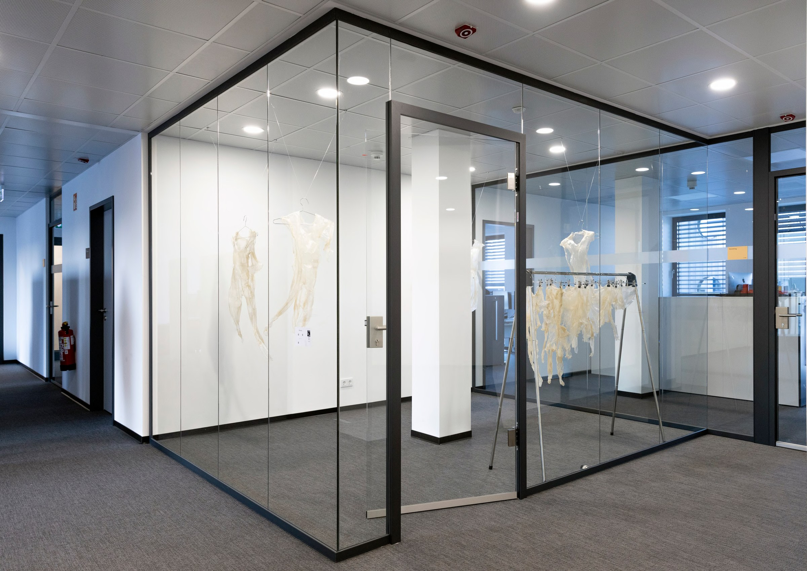
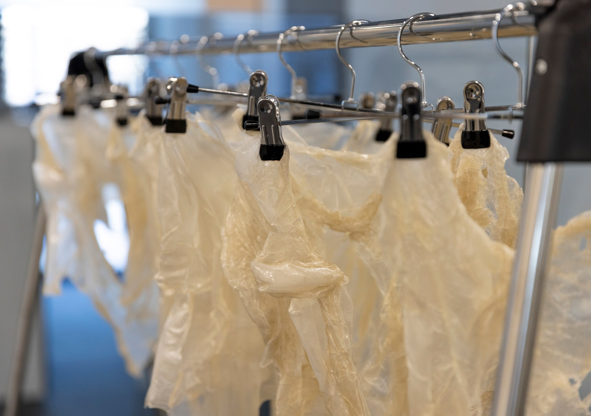

Häutung
Getrocknete Reispapierhüllen werden wie Kleidungsstücke aufgehängt. Sie erinnern an abwesende Körper, ohne sie darzustellen. Zwischen Material und Körper entsteht ein fragiler Zwischenzustand.



Getrocknete Reispapierhüllen werden wie Kleidungsstücke aufgehängt. Sie erinnern an abwesende Körper, ohne sie darzustellen. Zwischen Material und Körper entsteht ein fragiler Zwischenzustand.

